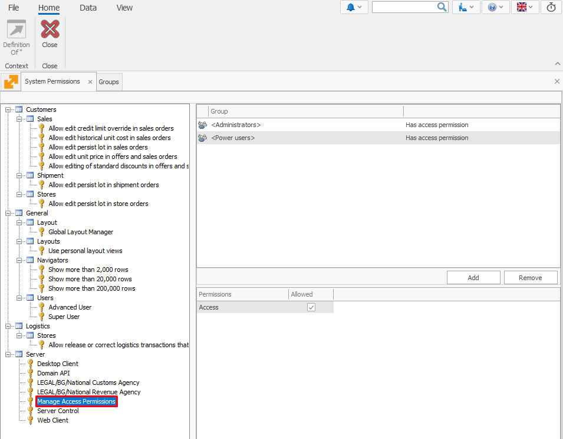

Manage Access Permissions
The Manage Access Permissions key is designed to provide select users or groups access to the Security panel (in the Desktop Client) or the Access Permissions panel (in the Web Client).
Only users with this key will see these panels in their respective environments.

Key Details
- Key Name: Manage Access Permissions
- Key Description: Allows users to manage access rights for other users.
- Default Groups:
- Administrators
- Power Users
Note: If a group does not have this key, its members will not see the Security/Access Permissions panels.
Business Rule Enforcement
A new business rule ensures proper implementation:
- Rule Name: R37166 SecurityGroup – System Group Update Not Allowed
- Functionality: Prevents unauthorized modifications to the Power Users and Administrators groups, which are automatically assigned this key.

Implementation Details
Database Changes
A new permission key is added to the database with the following configuration:
| Attribute | Value |
|---|---|
| Key | ManageAccessPermissions |
| Description | Manage Access Permissions |
| Default Groups | Administrators, Power Users |
User Interface
- The Manage Access Permissions key appears in the System Permissions dropdown menu.
- Users with this key can access the Security/Access Permissions panels seamlessly.
- Visibility is hidden for users without this key.
The Manage Access Permissions key enhances the platform’s role-based access control by delegating permission management to designated groups without compromising security.
By default, this key is assigned to the Administrators and Power Users groups, ensuring that users in these roles have the necessary access to manage permissions efficiently.